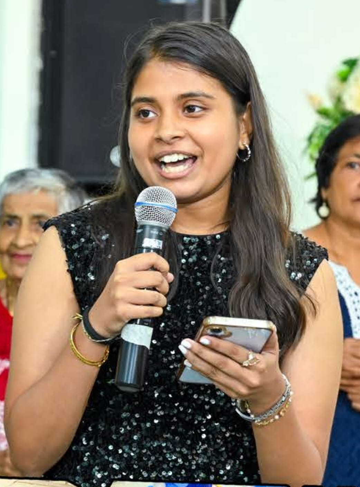
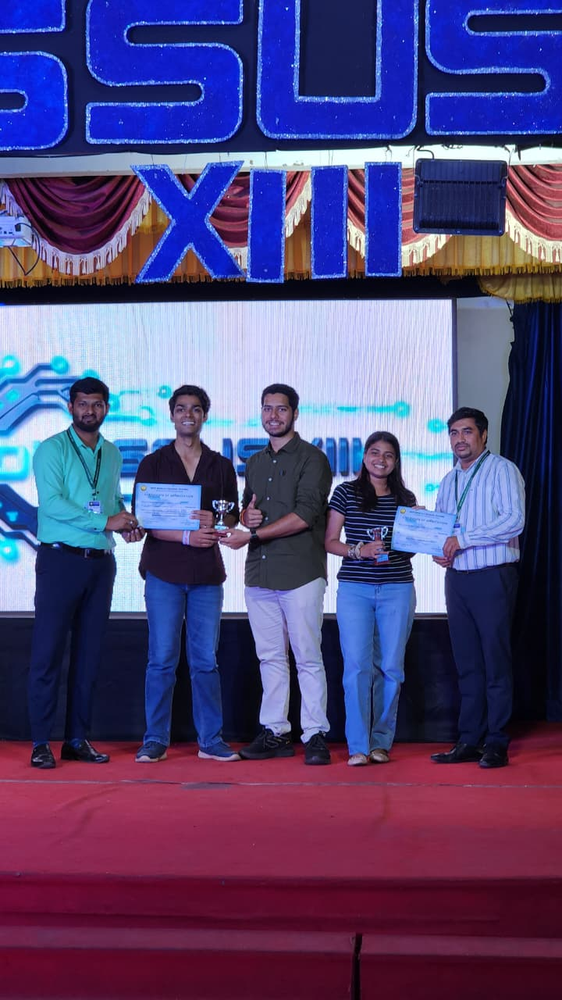
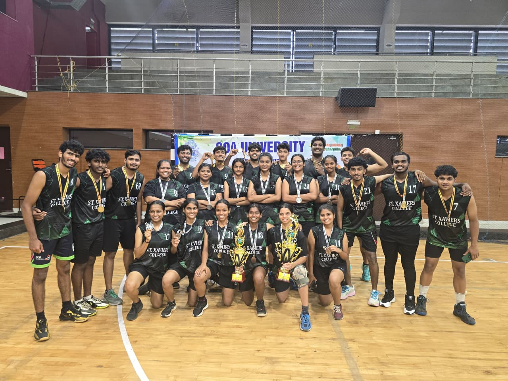

Sports Equipment Booking System
A full-stack web application for managing and booking sports equipment through a database-backed system.
React · Node.js · Express.js · MySQL
View Project →Bachelor of Computer Applications · Final Year
Flamica Carol Agnes Almeida, a final-year BCA student at St. Xavier's College, Mapusa, focused on backend development, cloud computing and Python.

About me
I am a final-year Bachelor of Computer Applications student interested in software development, cloud computing and technology.
I enjoy building practical projects and exploring technologies such as Python, JavaScript, Node.js, SQL and cloud computing.
I am particularly interested in understanding how applications, servers, databases and cloud infrastructure work together.
Education
2024 – 2027 Final year
St. Xavier's College, Mapusa · Affiliated to Goa University
Coursework: Data Structures, DBMS, Web Technologies, OOP, Computer Networks, Operating Systems, Agile Methodologies, UI/UX Design, Cloud Computing.
High School
GEMS Education
Beyond the classroom:
Internships
May 2026 – June 2026
K2 Bunker Fuel Supply LLC · Dubai, UAE
I gained practical experience working with data, visualisation and market research, working alongside the operations team.
Focus & skills
Building the server side of applications: APIs, application logic and databases with Node.js and MySQL.
Learning how applications, servers, databases and cloud infrastructure work together to run reliably.
Writing scripts, working with data and building practical projects in Python.
A full-stack web application for managing and booking sports equipment through a database-backed system.
React · Node.js · Express.js · MySQL
View Project →A relational database system for a Goa-based food delivery service, including database design, normalization and analytical SQL queries.
MySQL · SQL · ER Diagram · Database Normalization
View Project →A full-stack logistics management system for managing shipments, vehicles and inventory using CRUD operations and REST APIs.
React · Node.js · Express.js · Sequelize · MySQL
View Project →Achievements

Runner-Up · 11 Feb 2026
Pitched "SharpR", a screen-time reduction and productivity app concept.

Second Place · 2025 – 26
Represented St. Xavier's College, Mapusa, Goa.
Resume
Education, internship, projects, achievements and certifications on one page.
Contact